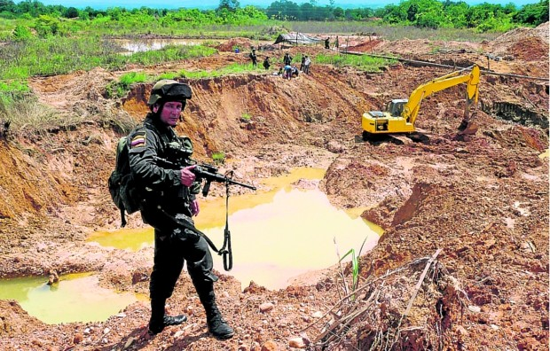

Inicio |
Coltan |
Explotacion de Oro |
Fiebre Del Oro |
Oro Ilegal |
Miles de minas ilegales han surgido en Colombia, aunque la mayoria son ilegales ya que las personas codician mucho el preciado metal sin las licencias adecuadas son un ejercito de mineros los que atacan, aunque los mineros saben que no se estan enriquesiendo ya que se ganan al dia unos 40.000 o 50.000, lo siguen haciendo, estas minas son muy devastadoras para el medio ambiente, estos saben que el mercurio es uno de los metales mas peligrosos pero con tal de enriquecerse lo siguen minando. Estas minas no solo contaminan el agua sino que tambien destruyen los habitats naturales la mineria se puede realizar de cualquier manera pero la peor es cuando se entra con escavadoras ya que con estas no queda absolutamente nada, es como si fuera a la luna. El gobierno ya se ha dado cuenta y ha empezado a clausurar estas minas ya que estan haciendo mucho daño contra la naturaleza, pero lastimosamente la gente vive de esto por lo cual los mineros no estan de acuerdo con esto ya que sin esto se quedarian sin trabajo y les tocaria irse y vivir de otra cosa, estos mineros lo que mas precian es el oro aunque ya no hay tanto como antes sino que estos se quedan solo por el metal, ya cuando las minas se acaban o el gobierno las cierra estos se van de ahí en busca de mas arrasando arboles y lo que se les cruce por el camino en que vayan.
Triste pero cierto
El cancer de la mineria ilicita es el oro y la metastasis, esta se ha disparado en los ultimos 5 años, de la mano de miles de dragas y retroexcavadoras que en cuestion de mese son capaces de convertir en un desierto de arenas muertas y lagunas de mercurio areas mas grandes que cualquiera de los centros urbanos de toda la region, en el Choco se ve el suelo amarillo y blanco porque las palas mecanicas y el mercurio que se usan para separar el oro de otros minerales borran las capas superiores del suelo, que son las que sustentan la vida vegetal, reporteros de el tiempo recorrieron seis regieones de Colombia y lograron documentar que en el pais esta lleno de crateres y de aguas muertas dejando a su paso mineria ilicita, se han hablado con hombres como Oscar Ceballos y Raul Rios, dos mineros de toda la vida, estos hablan al tiempo sobre su trabajo, saben que es ilicito pero no hacen nada para detenerlo porque no saben hacer otra cosa y tampoco piensan en una vida alejada del negocio de la mineria.